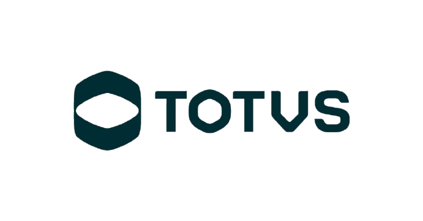

SEMANA01
Recorte e V2
Escolher casos, donos e provar uma consulta no Engine.
PassagemVersão fixada, isolamento e trace verificáveis.
Plataforma + produto
CAPACIDADES DE NEGÓCIO PARA AGENTES
Usar IA para descobrir, gerar e homologar tools dos produtos TOTVS para o LYNN.
Uma esteira de criação assistida para a execução durável do LYNN V2. REA como candidato à investigação.
A ideia continua válida. A nova arquitetura reforça a separação entre a engenharia que produz capacidades e o motor que as executa. A entrega passa a ser um pacote homologável: contrato, adaptador versionado, configuração para o Tool Service, manifesto de teste e evidências de negócio e recuperação.
REA permanece um candidato de engenharia. HTTP e MCP são caminhos possíveis do Tool Service; gerar um servidor MCP, sozinho, não demonstra integração operacional. A decisão sobre a esteira, a contribuição do REA e a prontidão da V2 devem ser tomadas separadamente.
A revisão usa as 28 páginas de “Arquitetura LYNN Agent Engine”, fornecidas pelo usuário. As responsabilidades descritas no anexo são referência de arquitetura, não comprovação de disponibilidade no ambiente do piloto. Metas, cronograma e controles adicionais continuam propostas.
A proposta é tornar repetível o trabalho entre uma necessidade de negócio e uma capacidade homologada no catálogo. A IA ajuda a descobrir interfaces, especificar contratos, gerar adaptadores e preparar testes. Produto, plataforma e QA continuam responsáveis pelo aceite.
O REA é uma opção de ferramenta de engenharia. A iniciativa pode prosseguir com ferramentas convencionais de IA se elas entregarem quase todo o benefício.
Este material consolida o briefing “LYNN Studio — Aceleração da criação de tools e MCPs” e a conversa de Ramon Martins da Silva com Giovani Zamboni em 21/10/2026. Prazos, amostra, alocação e metas são propostas. Os experimentos ainda não foram executados.
Fontes de contexto: Apresentação LYNN fornecida e TOTVS: foundation LYNN.
No foundation, o Agent Engine coordena tarefas por eventos, registra tentativas e permite retomada.
Resolve o manifesto e fixa uma cópia para a execução.
Despacha etapas pelo Event Bus e trata respostas e novas tentativas.
LLM, tools, memória e aprovações. Tool Service conecta operações externas.
O ATIVO QUE A PROPOSTA ACRESCENTA
Descobrir a interface, traduzir a operação e comprovar seu funcionamento no LYNN.
A apresentação de referência situa Builder, Enterprise Layer, Governance, SmartLink e LYNN DATA no foundation. O novo anexo detalha o Agent Engine: Gateway, Process Manager, Event Bus, serviços especialistas e persistência. A proposta se conecta a esse motor pela capacidade de executar operações suportadas dos produtos.
O Gateway resolve um agente publicado por ID e versão em LYNN Agents ou recebe um manifesto inline, útil para testes e CI/CD. O manifesto resolvido é preservado como snapshot no Trace (p. 8). O Process Manager interpreta transições e coordena serviços por mensagens (pp. 6 e 14). O Tool Service suporta HTTP, SMTP e MCP; a matriz inclui nós tool, api_client e email (pp. 16 e 23).
Trace representa a execução; Span representa uma tentativa atômica de uma etapa. PostgreSQL é a fonte durável. Redis apoia locks, coordenação e temporização efêmera. O Context é uma projeção reconstruída a partir dos estados persistidos, manifesto e sessão (pp. 11–12 e 18).
LYNN Agents e o snapshot do manifesto não comprovam um catálogo de tools com descoberta, curadoria, promoção, ownership e depreciação. O anexo mostra tools: [] no manifesto, mas não especifica esse ciclo. O piloto deve definir o mínimo necessário e sua relação com SmartLink e os componentes existentes, evitando construir um catálogo paralelo sem alinhamento.
O snapshot fixa o manifesto do agente, não necessariamente a implementação externa da tool. Contrato e adaptador também precisam de versões e política de compatibilidade explícitas.
“V2” é o nome da evolução arquitetural. O exemplo do PDF mantém schema “lynn/v1” (pp. 3 e 7); não se deve deduzir um schema “lynn/v2”.
Fontes: Arquitetura LYNN Agent Engine, pp. 3–8, 11–12, 16, 18 e 23; referência do foundation. O briefing usa “LYNN Studio”; a referência usa “LYNN Builder”. Os nomes são preservados nos contextos fornecidos.
A rota depende do que o produto já oferece. Todas convergem para uma capacidade homologada.
API ou serviço
já documentado.
Traduz contrato técnico em uma
operação clara para o agente.
Interface existente,
mas pouco conhecida.
Investiga objetos, metadados,
código e demonstrações.
A função existe, mas falta
uma integração estável.
Apoia a criação de um serviço
sobre a lógica do produto.
Todas as rotas entregam contrato + adaptador versionado + testes + integração V2. Skills podem combinar as tools em processos.
Protheus possui catálogo de APIs nativas. A documentação de Datasul financeiro descreve APIs e o contrato apipublicfin.json. No RM RH, a documentação mostra identificação de DataServers a partir da tela e consulta de metadados pelo TOTVS WS Client. Esses ativos devem ser investigados antes de criar uma necessidade artificial de engenharia reversa.
A conversa cita descoberta por objetos de negócio e SmartX como inspiração. Isso permanece hipótese técnica. É preciso confirmar mecanismo, cobertura, suporte e compatibilidade antes de colocá-lo no caminho de execução.
Geração por OpenAPI pode acelerar o adaptador, mas uma API complexa ainda exige curadoria do nome, dos parâmetros e do escopo da tool. Operações de preço, crédito, estoque ou tributos devem preservar as regras suportadas pelo produto.
Os pontos TOTVS acima são referências documentais do briefing. Não representam teste de integração neste projeto. Conversa: 22:10–32:51.
O especialista demonstra a tarefa. A IA prepara a candidata. Produto e QA verificam o significado e o resultado.
“Liste os títulos vencidos deste cliente e explique quais compõem o saldo.”
1Especialista mostra a consulta no ERP e suas variações.
2IA relaciona evidências, interface e contrato candidato.
3Produto esclarece saldo, pagamentos parciais e renegociação.
Resultado fiel ao ERP, com versão identificada e evidência da execução em Trace / Span.
A demonstração é uma especificação inicial. Ela mostra uma tarefa, o resultado esperado e pistas sobre a interface. A investigação precisa registrar o que foi observado, o que foi derivado, o que é inferência e o que ainda precisa de confirmação.
O retorno completo pode incluir identificador, vencimento, moeda, valor original, saldo, situação e instante da consulta. Produto define o significado de “em aberto” e “vencido”, considerando pagamentos parciais, renegociação e referência temporal. O teste compara os dados a uma referência independente.
Registrar interface suportada, transporte, versões e compatibilidade, entradas/saídas, erros de negócio e transitórios, timeout e política de novas tentativas. Tenant e identidade devem vir de origem confiável; parâmetros gerados pelo agente não concedem autorização. O produto valida empresa, filial e usuário. Credenciais são referenciadas via LYNN Secrets, sem valores em prompts ou evidências (anexo, pp. 10, 13, 16–17 e 21–22).
Uma consulta repetida pode observar um saldo diferente após movimentações. Esclarecer data de referência, instante da resposta e consistência entre páginas. COMPLETED no Engine deve ser confrontado com o resultado esperado no produto.
O exemplo é hipotético. Não afirma que existe um endpoint ou uma tool com esse nome no catálogo atual.
Fonte: briefing fornecido, seções 4.2 e 6.
Para escritas, validar idempotência ou reconciliação no ERP. A outbox do motor não torna essa operação uma transação única.
REA e geração de artefatos ficam na engenharia. O caminho operacional utiliza o Tool Service, por HTTP ou MCP conforme o contrato suportado, e uma interface do ERP que preserve suas regras. O diagrama mostra o fluxo lógico: Process Manager e serviços recebem e devolvem mensagens pelo Event Bus. Não é uma cadeia síncrona direta entre todos os componentes.
Esta lista é uma proposta de entregáveis. O anexo não fornece o schema completo de integração ao Tool Service; não há aqui um contrato wire oficial inventado.
O barramento admite entrega at-least-once: eventos podem ser recebidos novamente (p. 17). Trace e outbox são gravados na mesma transação do motor; o worker publica depois (p. 18). Essa garantia não inclui uma transação conjunta com o ERP.
Caso obrigatório para uma escrita: o ERP efetiva a operação, mas a resposta se perde. Uma nova tentativa não pode simplesmente repetir o efeito. Definir uma chave de operação estável e mecanismo suportado de consulta/reconciliação, ou limitar o escopo até resolver essa fronteira. event_id e attempt do motor, isoladamente, não demonstram essa propriedade de negócio. Cancelar o fluxo também não desfaz um efeito já confirmado.
O Context é reconstruído a cada ciclo (p. 12). Adaptadores não podem depender de variáveis globais ou da memória local de um worker para continuidade. Persistir o necessário para recuperar e explicar cada tentativa.
A revisão de produto/QA promove uma candidata na esteira de engenharia. Uma aprovação humana durante a execução é outra necessidade: a V2 descreve HITL Service, estado WAITING_HITL e callback humano. Timers pertencem a WAITING_CALLBACK, coordenados pelo Process Manager (p. 19). Só incluir esses mecanismos nos casos que deles dependem.
Code Runner não é o caminho padrão desse piloto. O anexo cita Cloud Functions nas pp. 5/16 e Cloud Run Jobs no diagrama p. 28; confirmar apenas se algum caso exigir scripts isolados. Isso não demonstra execução nativa de AdvPL/TL++ nos Runners.
Fonte: Arquitetura LYNN Agent Engine, pp. 7–8, 10–19, 21–25 e 27–28. A disponibilidade efetiva é objeto do gate, não uma conclusão desta revisão.
EXPERIÊNCIA PROPOSTA
O especialista de produto acompanha a descoberta assistida pelo REA e revisa o contrato.
Simulação interativa com dados fictícios. Compatibilidade REA com AdvPL/TL++ a validar.
Consultar os títulos em aberto de um cliente, por filial e vencimento.
✓ Demonstração da rotina ✓ Fontes autorizados .prw / .tlpp
✓ Dicionário de dados ✓ Documentação funcional
01Rotina e intençãoFINA040 / consulta de títulos em aberto
02Fontes e metadadosAdvPL / TL++ · entidade SE1
03Mapeamento candidatoCliente + loja / vencimento / saldo
cliente ← E1_CLIENTE
loja ← E1_LOJA
titulo ← E1_NUM
saldo ← E1_SALDOValidar regra de saldo, contexto de filial e interface suportada.
EntradasCliente + loja, período de vencimento, paginação.
ContextoTenant confiável; usuário, empresa e filial autorizados.
SaídaTítulo, parcela, vencimento e saldo em aberto.
A terceira etapa explicita a entrega candidata: integração ao Tool Service, referência a Secrets, versão inicial e manifesto de teste. A revisão humana desse artefato não é uma execução do HITL Service. O próximo passo real seria rodar a consulta pelo Engine e reunir Trace/Spans e evidência independente do resultado no ERP. Nenhum trace real é apresentado aqui. Fonte: Arquitetura LYNN Agent Engine, pp. 8, 11, 16 e 21.
O notebook mostra um protótipo interativo da experiência proposta para um especialista de produto. “Tool Lab” é um nome ilustrativo da interface, não uma funcionalidade lançada do LYNN ou uma tela nativa do REA. Os botões trocam estados locais e não acessam Protheus, REA, repositórios ou serviços.
O recorte usa Protheus Financeiro (SIGAFIN), rotina Contas a Receber (FINA040). A demonstração e os fontes autorizados orientam a descoberta de uma tool de consulta. A referência a AdvPL/TL++ descreve o ecossistema do produto, sem afirmar que a rotina foi reescrita em TL++ ou que o REA suporta essas linguagens.
SE1 e os campos E1_CLIENTE, E1_LOJA, E1_NUM e E1_SALDO são pistas de mapeamento, não uma implementação de acesso direto ao banco. A interface suportada, contexto de filial, regra de saldo e permissões permanecem pendentes de validação. Nenhum código interno TOTVS foi incluído ou executado.
Fontes: FINA040, TLPP e mapeamento financeiro SE1.
O README do REA descreve superfícies como JavaScript/Electron, assemblies .NET, binários nativos, websites e capturas de rede. Não houve instalação ou teste do REA em ambientes TOTVS nesta elaboração. O briefing não confirmou suporte dedicado a AdvPL/TLPP ou Progress/ABL.
O MCP de replay descrito na documentação responde com evidências retidas. Não chama a aplicação original. Escritas não modificam estado e corpos POST, PUT e PATCH são ignorados no comportamento documentado pelo briefing. Correspondências inexatas devem ser rejeitadas como prova de homologação.
Na análise documental do briefing, em 21/10/2026, a release identificada era 6.7.0, de 18/10/2026, e a implementação de replay havia entrado depois em main. Essa é uma fotografia da fonte, não uma afirmação sobre a release mais recente no momento do piloto. Fixar commit, versão, dependências e recursos efetivamente utilizados. Snapshot citado: 01788bac863ac786bfbb648cad69b11e23b40a89.
Análise local de arquivos não garante ausência de envio ao provedor do modelo. Selecionar e tratar evidências e credenciais antes do uso com IA.
Contrato existente
Código / metadados
Observação / investigação
Práticas e ferramentas
já utilizadas pelo time.
Contratos e adaptadores
com IA convencional.
Os mesmos recursos de B,
acrescidos do REA.
6 casos em A/B/CMesma V2 e mesmos testes.
6 casos novosRepetir a rota mais promissora.
Até 24 tentativasEscopo sujeito ao teto de esforço.
Os três braços devem produzir capacidades para o mesmo ambiente e versão do Engine, com a mesma base de integração, dados de avaliação, limites de acesso e critérios de aceite. Versões de manifesto e adaptador precisam ser identificáveis. A comparação mede a abordagem de criação. A não deve executar no legado enquanto C executa na V2, pois isso confundiria os efeitos de arquitetura e ferramentas.
O processo atual pode já utilizar IA. Nesse caso, B versus A mede o ganho da esteira proposta, não um ganho genérico da IA. B e C devem usar modelo, orçamento, fontes e permissões equivalentes, com o REA como diferença explícita. Evitar transferência das descobertas de C para B durante a medição.
O desenho de referência combina dois produtos, três classes de origem e dois casos por combinação. É um teto exploratório de 12 capacidades. Seis casos passam por A/B/C, totalizando 18 tentativas. Outros seis casos verificam repetibilidade, chegando a até 24 tentativas. Tentativas não equivalem a tools homologadas. Confirmar a disponibilidade de cada classe e reduzir o recorte quando necessário, preservando comparações diretas.
Registrar instalação, configuração, horas do especialista de produto, revisão, testes, falhas e retrabalho. Separar o esforço comum para habilitar a integração V2 dos custos de cada braço, mantendo ambos no custo total da iniciativa. Usar avaliações independentes dos exemplos de construção e incluir tentativas malsucedidas.
A V2 resolve o manifesto no início e guarda um snapshot. Isso não demonstra congelamento automático do código das ferramentas externas. Fixar também a versão do adaptador e a configuração do ambiente. Usar manifesto inline em testes somente após confirmar o contrato efetivamente disponível no ambiente. O manifesto ilustrado no PDF conserva o schema lynn/v1.
Briefing, seções 7 e 8. Arquitetura LYNN Agent Engine, pp. 3 e 7–8: contratos preservados, validação e resolução do manifesto. Pp. 16 e 23: execução pelo Tool Service. Amostra, alocação e desenho A/B/C são propostas. O PDF descreve a arquitetura e não comprova implantação ou disponibilidade no ambiente do piloto.
O primeiro marco é uma consulta ponta a ponta. A preparação das candidatas pode avançar em paralelo.
Escolher casos, donos e provar uma consulta no Engine.
Fechar integração de referência, contratos e testes.
Executar A/B/C com o mesmo destino operacional.
Testar tarefas na V2 e aplicar a rota a casos novos.
Testar repetição de eventos, indisponibilidade e reparo.
Avaliar ganho da esteira, REA e prontidão operacional.
Selecionar uma consulta de baixo risco, com resultado de referência conhecido, e provar uma fatia funcional: Gateway resolve manifesto, Process Manager despacha um nó tool ou api_client, Tool Service utiliza a integração aprovada com Secrets, a interface suportada do produto aplica as permissões e o retorno fica identificável em Trace/Span.
O gate deve registrar versões e ambiente, validar uma falha controlada e conferir isolamento entre contextos empresariais. Trace concluído é evidência de execução. Produto e QA também precisam confirmar o resultado de negócio. A documentação da V2 orienta os testes, mas não substitui essa prova no ambiente disponível.
Seleção de tarefas, demonstrações, investigação de APIs e fontes autorizados, avaliação do REA, geração de contratos/adaptadores e testes independentes podem ocorrer em paralelo. A homologação operacional depende da fatia V2 necessária ao caso. HITL, callbacks e streaming só entram como dependências quando o cenário precisar deles.
Se o gate não passar, registrar a candidata como validada fora do Engine ou com integração pendente. Prosseguir com a pesquisa de engenharia e ajustar o cronograma da homologação. O ciclo de seis semanas não inclui construir toda a V2. O prazo também depende de pessoas, dados, acessos e ambientes disponíveis.
Realizar dois checkpoints por semana. Semana 2 fixa contratos, versões, REA e datasets. Semana 3 compara esforços sem excluir falhas. Semana 4 valida as tarefas na V2 e aplica a rota a casos novos. Semana 5 exercita manutenção e recuperação, conferindo tanto a trilha do Engine quanto dados e efeitos no produto. Semana 6 separa a decisão sobre a esteira, sobre o REA e sobre a prontidão operacional.
Aplicar testes de contrato e negócio a cada candidata. Usar uma suíte compartilhada de falhas para fluxos representativos por produto e transporte, evitando repetir toda a matriz em cada uma das 24 tentativas. O recorte permanece sujeito ao teto de esforço.
Arquitetura LYNN Agent Engine, pp. 7–8: manifesto e snapshot. Pp. 11 e 14: Trace/Span e ciclo de despacho. Pp. 16 e 21: Tool Service, Secrets e execução ponta a ponta. Pp. 17–20: redelivery, outbox, espera e streaming. Briefing, seções 8–10. Cronograma e critérios de passagem são propostas para o piloto.
Comparação com o processo atual, mantendo os critérios de qualidade.
Meta proposta para o piloto.Medir preparação, revisão e retrabalho. Separar o custo comum de integrar à V2.
Validar negócio, isolamento e retries. Conferir efeitos e resultado no ERP.
C precisa superar B e compensar configuração, dependências e manutenção.
Tempo até a conclusão, custo por tarefa e tempo de diagnóstico e reparo.
A meta de reduzir 40% do esforço é uma hipótese inicial a pactuar. Preparação inicial e custos recorrentes precisam permanecer visíveis. Informar mediana, faixa, tamanho da amostra e rejeições por classe. A amostra exploratória não permite generalizar ausência de falhas para toda a produção.
Medir latência operacional separadamente do esforço humano de criar a capacidade. A V2 reconhece latência adicional dos hops de rede e da persistência de Spans. Recebimento da solicitação, primeiro evento SSE e conclusão da tarefa são momentos diferentes. O streaming descrito acompanha eventos de ciclo de vida e não implica geração token a token em todos os nós. Percentis operacionais exigem execuções repetidas e amostra declarada.
Para cada candidata, testar resultado esperado, resultado vazio, paginação, erro de negócio, acesso negado e contexto empresarial. Para a integração compartilhada, exercitar snapshot de manifesto, isolamento entre tenants e filiais, segredo mascarado, redelivery de evento, timeout, reinício com evento pendente na outbox e recuperação. Quando usados, incluir callbacks repetidos, espera humana, reconexão do streaming e cancelamento.
A arquitetura descreve entrega at-least-once, deduplicação e transação conjunta entre Trace e Outbox. Isso não comprova execução exatamente uma vez no ERP nem transação distribuída entre o Engine e o produto. Em escrita, um efeito pode ocorrer antes da perda da resposta. Exigir estratégia validada no produto para identificar a operação, consultar ou reconciliar seu resultado e decidir se cabe repetição. Na ausência dessa estratégia, manter o recorte em consulta ou simulação.
Anotações MCP documentam características, mas não implementam autorização nem idempotência. Cancelar um fluxo não prova reversão de efeitos já realizados no sistema externo. Um Trace completo e o aceite funcional são evidências complementares.
Arquitetura LYNN Agent Engine, pp. 11 e 24: Trace/Span e estados. Pp. 17–18: at-least-once, deduplicação e outbox. Pp. 19–20: esperas e streaming. P. 22: latência adicional e evolução de tracing. Briefing, seções 11–13. Métricas e testes descritos aqui são critérios propostos, não resultados medidos.
DECISÃO SOLICITADA
Dois produtos, amostra exploratória
e teto de esforço acordado.
01Priorizar capacidades e nomear seus donos.
02Reservar equipe e ambientes de teste.
03Provar uma integração mínima com o Engine.
04Acordar aceite e ciclo de vida do catálogo.
Ganho da esteira, contribuição do REA e prontidão para operar na V2.
Autorizar um piloto de seis semanas com teto de esforço, escolher dois produtos, nomear um líder e reservar especialistas. A liberação de ambientes, dados, interfaces e fontes autorizados permite iniciar a investigação. A homologação operacional exige demonstrar a integração V2 necessária ao caso nas semanas 1 e 2.
Patrocínio e líder do piloto resolvem prioridades, alocação e dependências. Plataforma constrói a esteira e os adaptadores. Um responsável do Agent Engine confirma contratos e ambiente, conduz a integração e esclarece as garantias observáveis. Produto define semântica, interface suportada, compatibilidade e manutenção da capacidade. QA prepara avaliações independentes. Segurança verifica credenciais, identidade, isolamento e tratamento dos dados.
A candidata reúne contrato, adaptador versionado, evidências, testes e dono. A homologação verifica comportamento no produto e no Engine, nos contextos declarados. A publicação registra versão, compatibilidade e responsável. Mudanças futuras exigem política de manutenção, descontinuação e revalidação. Esse ciclo é uma proposta de operação do catálogo e não uma funcionalidade já comprovada pela arquitetura anexada.
O Gateway pode resolver uma versão publicada do agente em LYNN Agents e preservar o snapshot do manifesto na execução. A versão do contrato e do adaptador externo também precisa ser controlada. A revisão de artefatos por produto/QA não depende automaticamente do HITL Service, cuja função documentada é gerir intervenções humanas na execução.
Uma candidata útil pode existir antes de sua integração operacional. Um Engine operacional, por sua vez, não comprova benefício do REA. Cada conclusão precisa de evidência própria.
Arquitetura LYNN Agent Engine, pp. 6 e 16: separação de responsabilidades e serviços. Pp. 8 e 11: snapshot e execução durável. P. 19: HITL. P. 22: limites e evolução da observabilidade. Briefing, seções 10, 13 e 14, e conversa, 47:19–48:51. O catálogo reutilizável e a composição de processos são o horizonte da iniciativa. TaaS não é entrega nem hipótese de receita deste piloto.